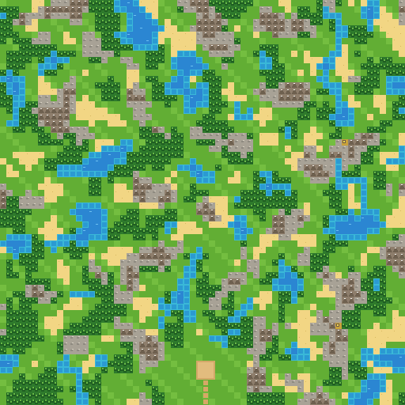
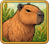

DÉV. ▾
RAPPORT ANNUELEXERCICE 2026

Bâtissez le zoo le plus rentable de la vallée,
avec le personnel que vous méritez.
avec le personnel que vous méritez.
DOSSIER EN COURS
Partie classique · Jour 6 · 4 joueurs · il y a 2 h
Continuer ›
ANNEXES
01Tutorielavec Hubert
02Règles et glossaire
03StatistiquesDaniel
04Réglages
05Quitterretour au bureau
« La pause est un état d'esprit. » H. de la Marge
Document réservé aux collaborateursCONFIDENTIEL
DÉFIS · NOUVEAU CHAQUE LUNDI
Défi de la semaine
Réserve naturelle
3 j 03 h 14
rang 14e sur 52

DÉFIS
Défis permanents
4 cartes fixes, un classement chacune.

JOUER À PLUSIEURS
Multijoueur
2 à 4 humains, IA en complément. Héberger ou rejoindre.
JOUER
Partie classique
Vous + 1 à 3 IA. Premier à 120 de réputation. Terrain aménageable.

JOUER
Réserve naturelle
Mêmes rivaux, terrain tel quel : trouvez les motifs déjà présents.
JOUER
Gestion libre
Seul, sans fin. Naissances et livre d'or.

Partie classique · réglages~14 jours
Adversaires
1
2
3


 PanZoo, Safari Capital, BioLand
PanZoo, Safari Capital, BioLandDifficulté
Facile
Moyen
Difficile
Carte

54953
↻ Autre carte
Forêt 21 % · eau 13 % · roche 11 %
Premier à 120 de réputation. Le terrain s'aménage : creuser, planter, dérocher.
Terrain aménageable
Signer la prise de poste ›
Remplacera le dossier en cours (jour 6).